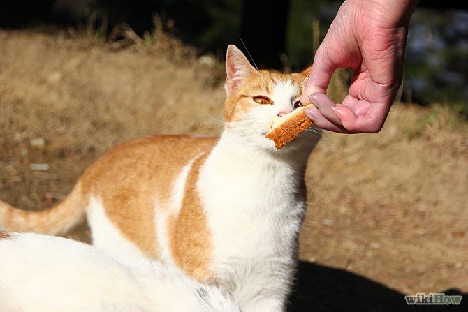

Do you have trouble knowing when enough pets is enough? Well, worry no more -- some possible ideas are outlined below.
If you can't count them, or lose count, you probably have too many pets.
If you guys can't remember them, and you have a good memory, you probably have too many pets.
You should always remember to take care of your pets. If you don't have time to take care of them all, or don't remember which ones you have taken care of that day, you may have to get rid of some of them. Consider an animal shelter or if you have a friend/family member that may want the pet.
If you are spending too much money on food, toys, bedding, accessories, new cages, etc., you may not be able to afford many pets.
You should have enough room for each pet rather than being cramped with many pets in a single room.
If it takes over 2-3 hours, then you probably have too many pets to take care of.